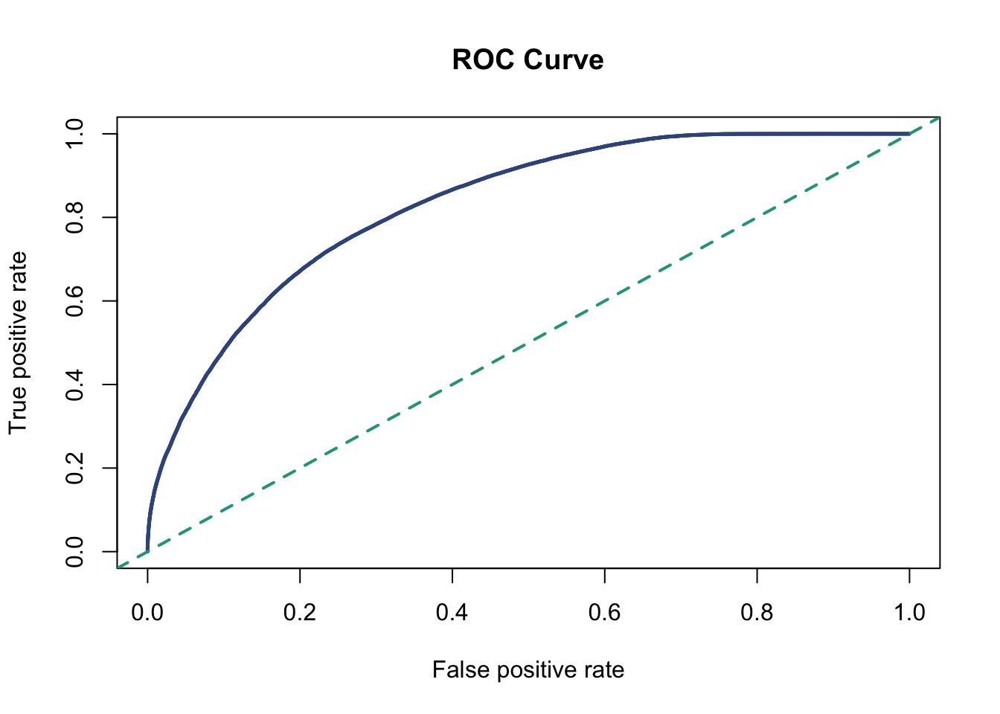
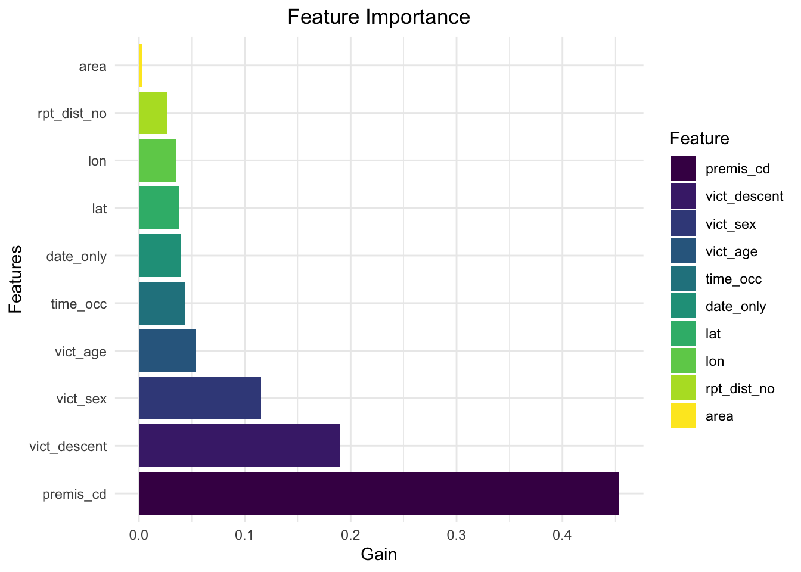
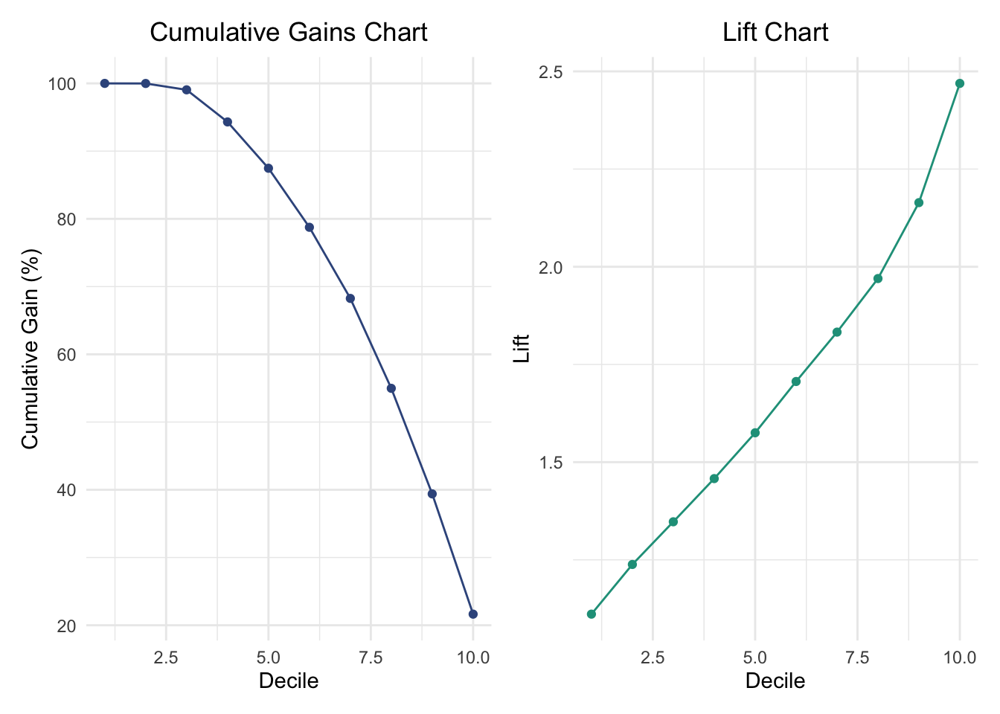

Here are some key steps in this part.
date_occ column is transformed to retain only the date
portion, while time_occ is formatted into a 4-digit time
string (e.g., 930 becomes 0930).date_only,time_occ,area,serious_level,vict_age,vict_sex,vict_descent,rpt_dist_no,premis_cd,lat,lon.We are building this model to predict crime severity based on crime location, victim demographics, and crime time. Also, we are trying to use as less predictors as possible and only keep those primary data for any crime (e.g, minimum information for 911 operator to assess the situation and dispatch appropriate help). Social and legal support services can be deployed more effectively in areas or for demographics where severe crimes are predicted to occur.(eg, enhance vigilance for incidents more likely to escalate into severe crimes)
crime_data = read.csv(file ="./data/crime_data_LA.csv", row.names = 1) |>
janitor::clean_names() |>
rename(serious_level = part_1_2) |>
mutate(
serious_level = as.numeric(as.factor(serious_level)) - 1, # Ensure binary
date_only = as.Date(mdy_hms(date_occ)), # Extract only the date
# Step 3: Convert `time_occ` into a proper time format
time_occ = sprintf("%04d", time_occ)
)|>
drop_na(serious_level) |>
select(date_only,time_occ,area,serious_level,vict_age,vict_sex,vict_descent,rpt_dist_no,premis_cd,lat,lon)We separate the data into train and test into 8:2 by stratified sampling so that we will reach at a balanced the train and test set to avoid any possible bias from the spliting. Also, Stratified sampling maintains the class distribution in both training and testing sets, ensuring the model is evaluated fairly on the test set.
# Split the data
set.seed(0)
parts = createDataPartition(crime_data$serious_level, p = .8, list = FALSE)
train = crime_data[parts, ]
test = crime_data[-parts, ]
# Define predictors and response
target_col = "serious_level"
train_x = data.matrix(train[, !colnames(train) %in% target_col]) # Features
train_y = train[[target_col]] # Target
test_x = data.matrix(test[, !colnames(test) %in% target_col]) # Features
test_y = test[[target_col]] # Target
xgb_train = xgb.DMatrix(data = train_x, label = train_y)
xgb_test = xgb.DMatrix(data = test_x, label = test_y)Distribution of crime severity in original
dataset,training and testing
dataset (0 stands for serious crime and
1 stands for less serious)
crime_data_proportions <- table(crime_data$serious_level) / nrow(crime_data)
train_proportions <- table(train$serious_level) / nrow(train)
test_proportions <- table(test$serious_level) / nrow(test)
# Combine proportions into a single data frame
combined_table <- data.frame(
Serious_Level = names(crime_data_proportions),
Crime_Data = as.vector(crime_data_proportions),
Training_Data = as.vector(train_proportions),
Testing_Data = as.vector(test_proportions)
)
# Use knitr::kable to display the combined table
knitr::kable(
combined_table,
col.names = c("Serious Level", "Crime Data Proportion", "Training Data Proportion", "Testing Data Proportion"),
caption = "Distribution of Serious Levels Across Datasets"
)| Serious Level | Crime Data Proportion | Training Data Proportion | Testing Data Proportion |
|---|---|---|---|
| 0 | 0.5957474 | 0.5959286 | 0.5950226 |
| 1 | 0.4042526 | 0.4040714 | 0.4049774 |
The table suggests that stratified sampling has been done correctly and reached our expectation intending to aviod bias caused by dataset spliting.
We save the model to the repository only the first time to avoid repeated calculation. Although we didn’t show the exact the parameters adjustment steps here, we use grid_search to find the parameter group with the best performance.
# Train the final model with the best parameters
if (!file.exists("pred_models/xgboost_model.model")) {
param_grid = expand.grid(
max_depth = c(4, 6, 8),
eta = c(0.01, 0.1, 0.3),
min_child_weight = c(1, 3, 5),
subsample = c(0.7, 0.8, 0.9),
colsample_bytree = c(0.7, 0.8, 0.9)
)
# Placeholder for best parameters and best logloss
best_logloss = Inf
best_params = NULL
# Grid search
for (i in 1:nrow(param_grid)) {
params = list(
objective = "binary:logistic",
eval_metric = "logloss", # Ensure logloss is the evaluation metric
max_depth = param_grid$max_depth[i],
eta = param_grid$eta[i],
min_child_weight = param_grid$min_child_weight[i],
subsample = param_grid$subsample[i],
colsample_bytree = param_grid$colsample_bytree[i]
)
# Watchlist for evaluation
watchlist = list(train = xgb_train, test = xgb_test)
# Train the model
xgb_model = xgb.train(
params = params,
data = xgb_train,
nrounds = 300,
watchlist = watchlist,
verbose = 0
)
# Extract test logloss
logloss = as.numeric(xgb_model$evaluation_log[nrow(xgb_model$evaluation_log), "test_logloss"])
# Update best parameters if current logloss is better
if (logloss < best_logloss) {
best_logloss = logloss
best_params = params
}
}
# Print the best parameters and logloss
cat("Best Parameters:\n")
print(best_params)
cat("Best Logloss: ", best_logloss, "\n")
best_model = xgb.train(
params = best_params,
data = xgb_train,
nrounds = 300,
watchlist = watchlist,
verbose = 0
)
xgb.save(best_model, "pred_models/xgboost_model.model")
cat("Model saved to 'xgboost_model.model'\n")
} else {
best_model = xgb.load("pred_models/xgboost_model.model")
cat("Model loaded from 'xgboost_model.model'\n")
}## Model loaded from 'xgboost_model.model'predictions = predict(best_model, test_x, type = "prob") # Assuming `type = "prob"` gives probabilities
pred = prediction(predictions, test_y)# Convert predicted probabilities to binary predictions using a 0.5 threshold
pred_labels = ifelse(predictions > 0.5, 1, 0)
pred_labels = factor(pred_labels, levels = c(0, 1))
# Create a confusion matrix
conf_mat = confusionMatrix(pred_labels, factor(test_y))
# Extract evaluation metrics from the confusion matrix
accuracy = conf_mat$overall['Accuracy']
precision = conf_mat$byClass['Pos Pred Value']
recall = conf_mat$byClass['Sensitivity']
f1_score = conf_mat$byClass['F1']
# Calculate AUC (Area Under the Curve) using ROCR
perf_auc = performance(pred, measure = "auc")
auc_value = perf_auc@y.values[[1]]
# Combine metrics into a data frame
metrics_table =
data.frame(
Metric = c("AUC", "Accuracy", "Precision", "Recall", "F1 Score"),
Value = c(auc_value, accuracy, precision, recall, f1_score)
)
metrics_table |> knitr::kable(digits = 4)| Metric | Value | |
|---|---|---|
| AUC | 0.8293 | |
| Accuracy | Accuracy | 0.7477 |
| Pos Pred Value | Precision | 0.7708 |
| Sensitivity | Recall | 0.8198 |
| F1 | F1 Score | 0.7945 |
We made a table summarizing the evaluation metrics (AUC, Accuracy,
Precision, Recall, F1 Score) is printed in a clean format.
The ROC Curve visually complements the table by plotting the True Positive Rate (Sensitivity) against the False Positive Rate (1 - Specificity) for different thresholds. The blue curve shows the model’s superior performance, remaining significantly above the green diagonal line, which represents random guessing, with the steepness and height of the curve near the top-left corner further validating its strength.
# Plot the ROC Curve
perf = performance(pred, measure = "tpr", x.measure = "fpr")
plot(perf, col = "#39568CFF", main = "ROC Curve", lwd = 2.5)
abline(a = 0, b = 1, col = "#20A387FF", lty = 2, lwd = 2)
This feature importance chart demonstrates that location type (premis_cd) and racial or ethnic background of the victim (vict_descent) are the most influential factors in predicting the model’s target variable. Meanwhile, features like the crime’s area or specific date contribute less significantly. This information is valuable for model interpretation and could guide future feature engineering or data collection priorities.
feature_names = colnames(train_x)
importance_matrix = xgb.importance(feature_names = feature_names, model = best_model)
# Convert the importance matrix to a data frame
importance_df = importance_matrix[1:10, ]
importance_df$Feature = factor(importance_df$Feature, levels = importance_df$Feature)
# Plot using ggplot2
ggplot(importance_df, aes(x = Feature, y = Gain, fill = Feature)) +
geom_bar(stat = "identity") +
scale_fill_viridis_d() +
coord_flip() +
theme_minimal() +
labs(title = "Feature Importance", x = "Features", y = "Gain") +
theme(
plot.title = element_text(hjust = 0.5)
)
test =
test |>
mutate(predicted_prob = predictions) |>
arrange(desc(predicted_prob)) |>
mutate(
cumulative_positive = cumsum(serious_level), # Cumulative count of positives
cumulative_total = row_number(), # Cumulative count of total records
cumulative_gain = cumulative_positive / sum(serious_level) * 100, # Cumulative gain percentage
lift = cumulative_positive / cumulative_total / (sum(serious_level) / nrow(test)) # Lift
)
# Step 2: Divide into 10 groups (Deciles) based on predicted probabilities
test =
test |>
mutate(decile = ntile(predicted_prob, 10)) # Create 10 equal groups based on predicted probabilities
# Step 3: Calculate cumulative gains and lift for each Decile
gain_lift =
test |>
group_by(decile) |>
summarise(
total_in_decile = n(),
positives_in_decile = sum(serious_level),
cumulative_positives = max(cumulative_positive),
cumulative_gain = max(cumulative_gain),
lift = max(lift)
)# Step 4: Plot Cumulative Gains Chart
gains_plot =
ggplot(gain_lift, aes(x = decile, y = cumulative_gain)) +
geom_line(color = "#39568CFF") +
geom_point(color = "#39568CFF") +
labs(
title = "Cumulative Gains Chart",
x = "Decile",
y = "Cumulative Gain (%)"
) +
theme_minimal() +
theme(
plot.title = element_text(hjust = 0.5)
)
# Step 5: Plot Lift Chart
lift_plot =
ggplot(gain_lift, aes(x = decile, y = lift)) +
geom_line(color = "#1f9e89") +
geom_point(color = "#1f9e89") +
labs(
title = "Lift Chart",
x = "Decile",
y = "Lift"
) +
theme_minimal() +
theme(
plot.title = element_text(hjust = 0.5)
)
combined_plot = gains_plot + lift_plot
print(combined_plot)
For Cumulative Gains Chart, the curve starts at 0%
and increases steeply for the initial deciles, indicating that the top
deciles contain the highest proportion of the target class. The curve
flattens after the top deciles, reflecting diminishing returns as more
deciles are included.
For Lift Chart, lift values are highest for the
first few deciles, showing the model’s strong ability to concentrate the
target class in the top groups. Lift gradually decreases as more deciles
are included, approaching the baseline (lift = 1) in the later
deciles.
The steep cumulative gain in the initial deciles and high lift values
indicate the model is effective in prioritizing the target class (e.g.,
high-severity crimes) in the top percentile groups. These charts
demonstrate that the model performs significantly better than random
predictions in identifying and concentrating the target class.